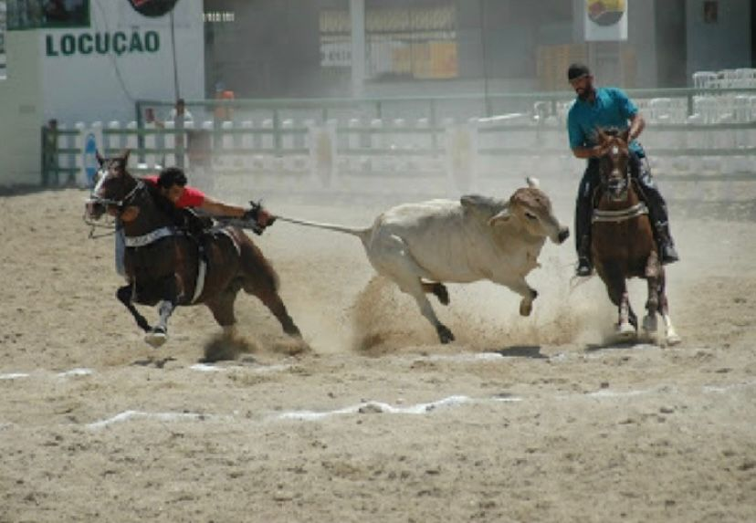
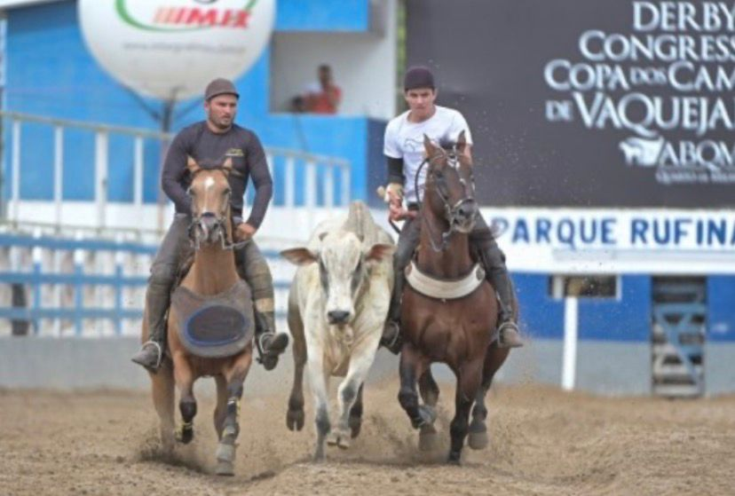
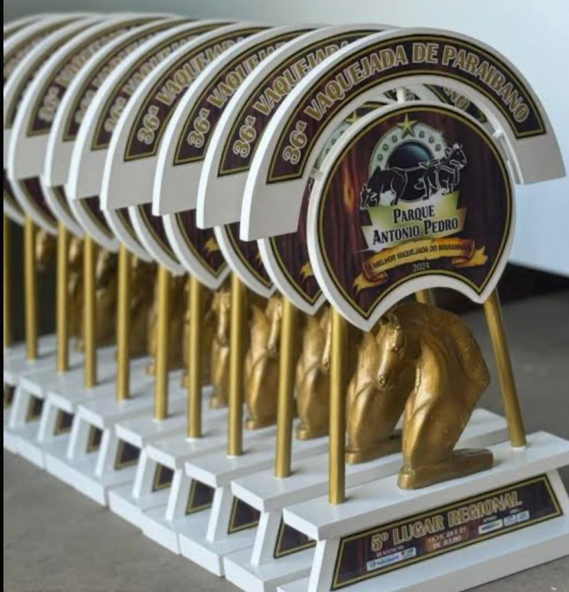

Contexto e História
A vaquejada é uma atividade cultural e esportiva muito difundida no Nordeste do Brasil. Sua origem remonta ao século XVII, na lida com o gado em campo aberto, onde os vaqueiros precisavam de habilidade para dominar os animais. Naquela época, não havia cercas, e a técnica era vital para a gestão das fazendas.
A vaquejada não é apenas uma competição, é a expressão máxima da identidade do sertanejo e um pilar da economia regional.
Uma data marcante para o esporte foi em , quando a prática foi reconhecida como patrimônio cultural imaterial do Brasil. Atualmente, a ABVAQ regulamenta as normas de bem-estar animal, garantindo que o esporte evolua com responsabilidade. O termo valeu o boi é o grito de vitória mais esperado nas arenas.
Regras e Fundamentos
Equipamentos do Vaqueiro
- Gibão de couro legítimo
-
Proteções essenciais
- Luva de tração (para o puxador)
- Luva de esteira (para o auxiliar)
- Botas com esporas rombas
- Capacete de segurança obrigatório
Fases da Corrida
- Saída do gado do mictório (curral de espera)
- Alinhamento do boi entre os dois cavalos na pista
- Condução do animal até a faixa de pontuação
- Derrubada do boi dentro das faixas demarcadas
Glossário da Areia
- Vaqueiro Puxador
- O competidor responsável por segurar a cauda do boi e realizar a manobra de queda.
- Vaqueiro Esteira
- O parceiro que ajuda a alinhar o boi e o mantém próximo ao puxador para facilitar a queda.
- Faixa de Pontuação
- Área demarcada na areia onde o boi deve cair para que os pontos sejam validados.
Estatísticas e Categorias
| Categoria | Inscrição Média | Prêmio Estimado | Nível de Dificuldade |
|---|---|---|---|
| Profissional | R$ 2.500,00 | R$ 100.000,00 | Muito Alto |
| Amador | R$ 1.200,00 | R$ 40.000,00 | Médio/Alto |
| Aspirante | R$ 600,00 | R$ 15.000,00 | Iniciante |
Galeria de Imagens



Referências Externas
Para saber mais sobre este esporte, visite as fontes oficiais: